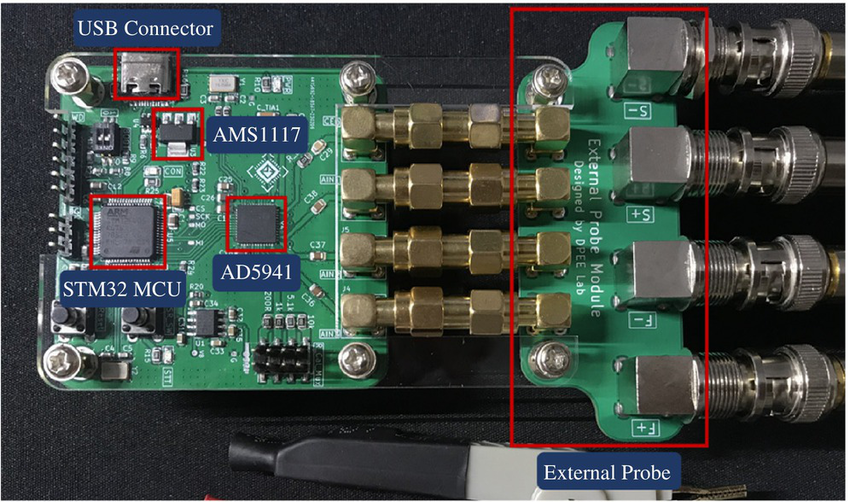
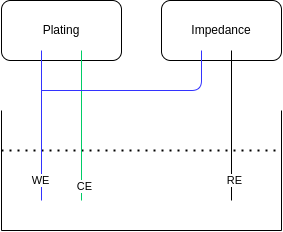
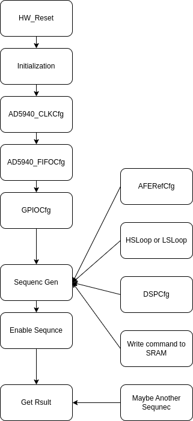
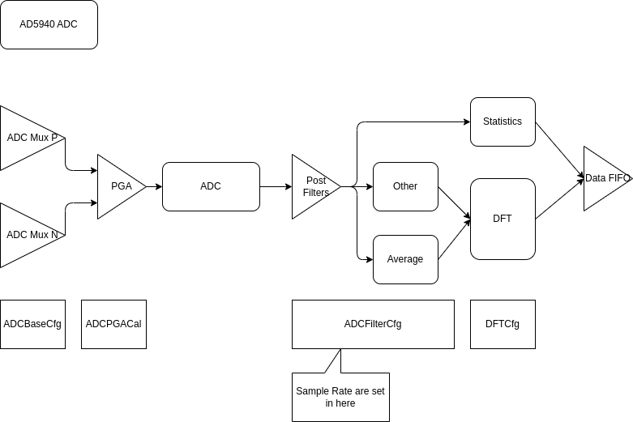
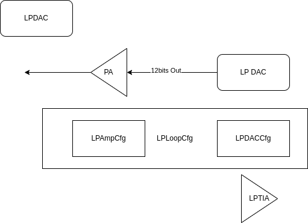
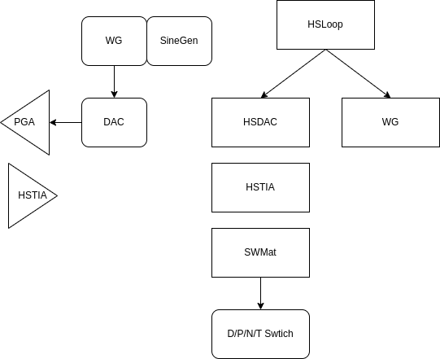
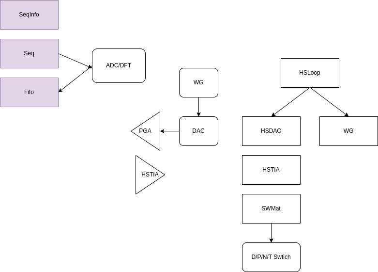

AD5940
Github for AD5940
Data Sheet and Application Notes of AD5940
AN1557 Implementing the AD5940 and AD8233 in a Full Bioelectric System
AD1563 Optimizing the AD5940 for Electrochemical Measurements
AD5940 Related Papers
A Multi-Sensory Hardware Platform for Capturing andAnalyzing Physiological Emotional Signals
Wearable devices for glucose monitoring
A Portable Electrochemical Measurement Platform for Wearable-Flexible Sweat Sensors
Design and Implementation of a Cost-Effective, Portable Impedance Analyzer Device with AD5941
Plating


from following paper
Ultraflexible PEDOT:PSS/IrOx-Modified Electrodes
電化學
Impedance
Bio-Impedance 2/4 Wire BIA
Electrochemical Impedance Spectroscopy 2/3/4 Wire EIS
Automatic Balance Bridge Impedance

AD5933 Block Diagram

Nano Z

Tetroplater (Open Source)


AIA STM32 + AD5941

impedance-measurement-and-analysis
impedance-measurement-and-analysis
electrical bioimpedance spectroscopy EBIS
Impedance measurements have been performed on pure resistive loads as well as on a 2R1C series circuit

Plating and Z-Measurement

Electrochemical Impedance Spectroscopy─A Tutorial
Electrochemical Impedance Spectroscopy─A Tutorial
Electrochemical Impedance Spectroscopy (EIS): Principles, Construction, and Biosensing Applications
AD5940Lib Data Structure
AD5940Lib Sequencer
Sequencer Basic
6K SRAM
4 Seperate Sequence
Sequencer Command
Write : Move Data to Register (0x0000 to 0x21FC)
Address is 7 bits +
Wait Command : Wait in sync with Sequencer
Timeout Command : Timeout independet to Sequencer
AD5940 All Functions
AD5940 Basic Flow

Configurations
Basic Cfg
AFERefCfg : ADC/DAC/TIA reference and buffer
ADCBaseCfg : ADC Basic settings include MUX and PGA.
ADCFilterCfg : ADC filter settings.
DFTCfg : DFT
ADCDigComp : ADC digital comparator
StatCfg : Statistic function
SWMatrixCfg : Switch matrix configure
HSTIACfg : HSTIA Configure
HSDACCfg : HSDAC Configure
LPDACCfg : LPDAC Configure
LPAmpCfg : Low power amplifiers(PA and TIA)
WGTrapzCfg : Trapezoid Generator parameters
WGSinCfg : Sin wave generator parameters
AGPIOCfg : GPIO Configure
FIFOCfg : FIFO Configure
SEQCfg : Sequencer Configure
SEQInfo : Sequence info structure
SeqGpioTrig : ???
WUPTCfg : Wakeup Timer Configure
CLKCfg : Clock configure
HSDACCal : HSDAC calibration structure.
LPDACCal : LPDAC calibration structure.
LPDACPara : LPDAC parameters: LPDAC code to voltage transfer function.(Math)
LFOSCMeasure : LFOSC frequency measure structure
ADCPGACal : ADC PGA calibration type
LPTIAOffsetCal : LPTIA Offset calibration type
ClksCalInfo : Structure for calculating how much system clocks needed for specified number of data
SoftSweepCfg : Software controlled Sweep Function
fImpPol : Impedance result in Polar coordinate
fImpCar : Impedance result in Cartesian coordinate
iImpCar : Impedance result in Cartesian coordinate
FreqParams : FreqParams_Type - Structure to store optimum filter settings
Complex Cfg
WGCfg : Waveform generator configuration
WGTrapzCfg
WGSinCfg
HSLoopCfg : High speed loop configuration
SWMatrixCfg
HSDACCfg
WGCfg
HSTIACfg
LPLoopCfg : Low power loop Configure
LPDACCfg
LPAmpCfg
DSPCfg : DSP Configure
ADCBaseCfg
ADCFilterCfg
ADCDigComp
DFTCfg
StatCfg
HSRTIACal : HSTIA internal RTIA calibration structure
HSTIACfg
DFTCfg
LPRTIACal : LPTIA internal RTIA calibration structure
DFTCfg
AD5940 Software to Block Diagram
ADC

LSLoop

LPDAC

HSLoop

WaveGen Sin

WaveGen Arbitary

Notes
VBias0 output


Document from Page 30 : Low Power DAC Register : LPDACDAT0